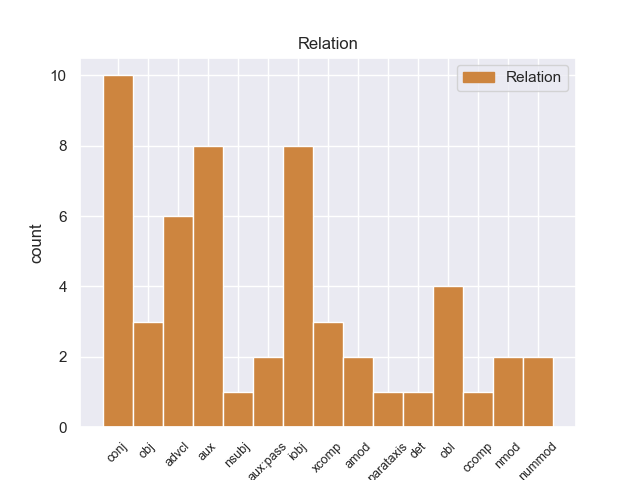
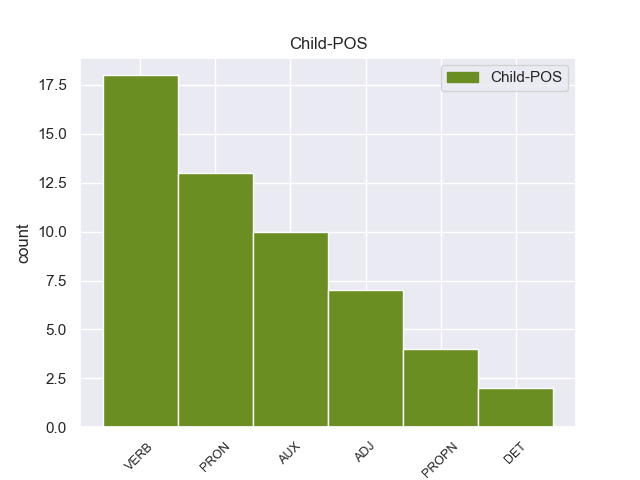

Distribution of features within this leaf



Agreement Rules sorted by frequency.
When the head token is VERB and the dependent token is VERB.
1 La _ _ _ _ 0 _ _ _
2 idea _ _ _ _ 0 _ _ _
3 inicial _ _ _ _ 0 _ _ _
4 de _ _ _ _ 0 _ _ _
5 este _ _ _ _ 0 _ _ _
6 tercer _ _ _ _ 0 _ _ _
7 libro _ _ _ _ 0 _ _ _
8 era _ _ _ _ 0 _ _ _
9 hacer _ _ _ _ 0 _ _ _
10 una _ _ _ _ 0 _ _ _
11 obra _ _ _ _ 0 _ _ _
12 " _ _ _ _ 0 _ _ _
13 para _ _ _ _ 0 _ _ _
14 compartir _ _ _ _ 0 _ _ _
15 con _ _ _ _ 0 _ _ _
16 los _ _ _ _ 0 _ _ _
17 colegas _ _ _ _ 0 _ _ _
18 de _ _ _ _ 0 _ _ _
19 profesión _ _ _ _ 0 _ _ _
20 " _ _ _ _ 0 _ _ _
21 , _ _ _ _ 0 _ _ _
22 y _ _ _ _ 0 _ _ _
23 de _ _ _ _ 0 _ _ _
24 ahí _ _ _ _ 0 _ _ _
25 que _ _ _ _ 0 _ _ _
26 en _ _ _ _ 0 _ _ _
27 las _ _ _ _ 0 _ _ _
28 cantidades _ _ _ _ 0 _ _ _
29 de _ _ _ _ 0 _ _ _
30 los _ _ _ _ 0 _ _ _
31 ingredientes _ _ _ _ 0 _ _ _
32 se _ _ _ _ 0 _ _ _
33 incluya incluir VERB _ Mood=Sub|Number=Sing|Person=3|Tense=Pres|VerbForm=Fin 0 _ _ _
34 la _ _ _ _ 0 _ _ _
35 versión _ _ _ _ 0 _ _ _
36 para _ _ _ _ 0 _ _ _
37 75 _ _ _ _ 0 _ _ _
38 comensales _ _ _ _ 0 _ _ _
39 , _ _ _ _ 0 _ _ _
40 pero _ _ _ _ 0 _ _ _
41 luego _ _ _ _ 0 _ _ _
42 se _ _ _ _ 0 _ _ _
43 cambió cambiar VERB _ Mood=Ind|Number=Sing|Person=3|Tense=Past|VerbForm=Fin 33 conj _ _
44 a _ _ _ _ 0 _ _ _
45 la _ _ _ _ 0 _ _ _
46 dimensión _ _ _ _ 0 _ _ _
47 familiar _ _ _ _ 0 _ _ _
48 ( _ _ _ _ 0 _ _ _
49 2 _ _ _ _ 0 _ _ _
50 y _ _ _ _ 0 _ _ _
51 6 _ _ _ _ 0 _ _ _
52 personas _ _ _ _ 0 _ _ _
53 ) _ _ _ _ 0 _ _ _
54 . _ _ _ _ 0 _ _ _
When the head token is VERB and the dependent token is VERB. and the head token is VERB and the dependent token is PRON.
1 Actualmente _ _ _ _ 0 _ _ _
2 se _ _ _ _ 0 _ _ _
3 encuentra _ _ _ _ 0 _ _ _
4 compitiendo _ _ _ _ 0 _ _ _
5 en _ _ _ _ 0 _ _ _
6 2 _ _ _ _ 0 _ _ _
7 categorías _ _ _ _ 0 _ _ _
8 la _ _ _ _ 0 _ _ _
9 World _ _ _ _ 0 _ _ _
10 Series _ _ _ _ 0 _ _ _
11 by _ _ _ _ 0 _ _ _
12 Renault _ _ _ _ 0 _ _ _
13 con _ _ _ _ 0 _ _ _
14 el _ _ _ _ 0 _ _ _
15 equipo _ _ _ _ 0 _ _ _
16 Draco _ _ _ _ 0 _ _ _
17 Racing _ _ _ _ 0 _ _ _
18 y _ _ _ _ 0 _ _ _
19 la _ _ _ _ 0 _ _ _
20 Auto _ _ _ _ 0 _ _ _
21 GP _ _ _ _ 0 _ _ _
22 con _ _ _ _ 0 _ _ _
23 el _ _ _ _ 0 _ _ _
24 equipo _ _ _ _ 0 _ _ _
25 Trident _ _ _ _ 0 _ _ _
26 Racing _ _ _ _ 0 _ _ _
27 con _ _ _ _ 0 _ _ _
28 quien quien PRON _ Number=Sing|PronType=Int,Rel 29 obl _ _
29 consiguió conseguir VERB _ Mood=Ind|Number=Sing|Person=3|Tense=Past|VerbForm=Fin 0 _ _ _
30 una _ _ _ _ 0 _ _ _
31 victoria _ _ _ _ 0 _ _ _
32 en _ _ _ _ 0 _ _ _
33 2010 _ _ _ _ 0 _ _ _
34 en _ _ _ _ 0 _ _ _
35 el _ _ _ _ 0 _ _ _
36 circuito _ _ _ _ 0 _ _ _
37 de _ _ _ _ 0 _ _ _
38 navarra _ _ _ _ 0 _ _ _
39 . _ _ _ _ 0 _ _ _
When the head token is VERB and the dependent token is VERB. and the head token is VERB and the dependent token is PRON. and the head token is VERB and the dependent token is AUX.
1 Durante _ _ _ _ 0 _ _ _
2 este _ _ _ _ 0 _ _ _
3 tiempo _ _ _ _ 0 _ _ _
4 me _ _ _ _ 0 _ _ _
5 he haber AUX _ Mood=Ind|Number=Sing|Person=1|Tense=Pres|VerbForm=Fin 6 aux _ _
6 hundido hundido VERB _ Gender=Masc|Number=Sing|Tense=Past|VerbForm=Part 0 _ _ _
7 en _ _ _ _ 0 _ _ _
8 la _ _ _ _ 0 _ _ _
9 problemática _ _ _ _ 0 _ _ _
10 de _ _ _ _ 0 _ _ _
11 la _ _ _ _ 0 _ _ _
12 zona _ _ _ _ 0 _ _ _
13 metropolitana _ _ _ _ 0 _ _ _
14 en _ _ _ _ 0 _ _ _
15 general _ _ _ _ 0 _ _ _
16 a _ _ _ _ 0 _ _ _
17 través _ _ _ _ 0 _ _ _
18 de _ _ _ _ 0 _ _ _
19 las _ _ _ _ 0 _ _ _
20 quejas _ _ _ _ 0 _ _ _
21 y _ _ _ _ 0 _ _ _
22 demandas _ _ _ _ 0 _ _ _
23 de _ _ _ _ 0 _ _ _
24 la _ _ _ _ 0 _ _ _
25 gente _ _ _ _ 0 _ _ _
26 , _ _ _ _ 0 _ _ _
27 y _ _ _ _ 0 _ _ _
28 me _ _ _ _ 0 _ _ _
29 preguntaba _ _ _ _ 0 _ _ _
30 en _ _ _ _ 0 _ _ _
31 qué _ _ _ _ 0 _ _ _
32 diablos _ _ _ _ 0 _ _ _
33 se _ _ _ _ 0 _ _ _
34 gastaban _ _ _ _ 0 _ _ _
35 los _ _ _ _ 0 _ _ _
36 jefes _ _ _ _ 0 _ _ _
37 delegacionales _ _ _ _ 0 _ _ _
38 de _ _ _ _ 0 _ _ _
39 la _ _ _ _ 0 _ _ _
40 capital _ _ _ _ 0 _ _ _
41 sus _ _ _ _ 0 _ _ _
42 presupuestos _ _ _ _ 0 _ _ _
43 , _ _ _ _ 0 _ _ _
44 porque _ _ _ _ 0 _ _ _
45 los _ _ _ _ 0 _ _ _
46 beneficios _ _ _ _ 0 _ _ _
47 no _ _ _ _ 0 _ _ _
48 llegan _ _ _ _ 0 _ _ _
49 a _ _ _ _ 0 _ _ _
50 la _ _ _ _ 0 _ _ _
51 gente _ _ _ _ 0 _ _ _
52 . _ _ _ _ 0 _ _ _
When the head token is VERB and the dependent token is VERB. and the head token is VERB and the dependent token is PRON. and the head token is VERB and the dependent token is AUX. and the head token is VERB and the dependent token is ADJ.
1 Debido _ _ _ _ 0 _ _ _
2 a _ _ _ _ 0 _ _ _
3 que _ _ _ _ 0 _ _ _
4 las _ _ _ _ 0 _ _ _
5 personas _ _ _ _ 0 _ _ _
6 con _ _ _ _ 0 _ _ _
7 acento _ _ _ _ 0 _ _ _
8 coreano _ _ _ _ 0 _ _ _
9 pronuncian _ _ _ _ 0 _ _ _
10 " _ _ _ _ 0 _ _ _
11 G _ _ _ _ 0 _ _ _
12 " _ _ _ _ 0 _ _ _
13 o _ _ _ _ 0 _ _ _
14 " _ _ _ _ 0 _ _ _
15 J _ _ _ _ 0 _ _ _
16 " _ _ _ _ 0 _ _ _
17 en _ _ _ _ 0 _ _ _
18 el _ _ _ _ 0 _ _ _
19 principio _ _ _ _ 0 _ _ _
20 de _ _ _ _ 0 _ _ _
21 las _ _ _ _ 0 _ _ _
22 palabras _ _ _ _ 0 _ _ _
23 de _ _ _ _ 0 _ _ _
24 manera _ _ _ _ 0 _ _ _
25 distinta _ _ _ _ 0 _ _ _
26 , _ _ _ _ 0 _ _ _
27 se _ _ _ _ 0 _ _ _
28 usó _ _ _ _ 0 _ _ _
29 15 _ _ _ _ 0 _ _ _
30 円 _ _ _ _ 0 _ _ _
31 50 _ _ _ _ 0 _ _ _
32 銭 _ _ _ _ 0 _ _ _
33 ( _ _ _ _ 0 _ _ _
34 jū _ _ _ _ 0 _ _ _
35 - _ _ _ _ 0 _ _ _
36 go _ _ _ _ 0 _ _ _
37 - _ _ _ _ 0 _ _ _
38 en _ _ _ _ 0 _ _ _
39 , _ _ _ _ 0 _ _ _
40 go go VERB _ Mood=Ind|Number=Sing|Person=3|Tense=Past|VerbForm=Fin 0 _ _ _
41 - _ _ _ _ 0 _ _ _
42 jū jū ADJ _ Gender=Masc|Number=Sing 40 nummod _ _
43 - _ _ _ _ 0 _ _ _
44 sen _ _ _ _ 0 _ _ _
45 ) _ _ _ _ 0 _ _ _
46 y _ _ _ _ 0 _ _ _
47 が _ _ _ _ 0 _ _ _
48 ぎぐ _ _ _ _ 0 _ _ _
49 げ _ _ _ _ 0 _ _ _
50 ご _ _ _ _ 0 _ _ _
51 ( _ _ _ _ 0 _ _ _
52 gagigugego _ _ _ _ 0 _ _ _
53 ) _ _ _ _ 0 _ _ _
54 como _ _ _ _ 0 _ _ _
55 un _ _ _ _ 0 _ _ _
56 Shibboleth _ _ _ _ 0 _ _ _
57 . _ _ _ _ 0 _ _ _
When the head token is VERB and the dependent token is VERB. and the head token is VERB and the dependent token is PRON. and the head token is VERB and the dependent token is AUX. and the head token is VERB and the dependent token is ADJ. and the head token is VERB and the dependent token is PROPN.
1 Los _ _ _ _ 0 _ _ _
2 últimos _ _ _ _ 0 _ _ _
3 enfrentamientos _ _ _ _ 0 _ _ _
4 frente _ _ _ _ 0 _ _ _
5 a _ _ _ _ 0 _ _ _
6 un _ _ _ _ 0 _ _ _
7 equipo _ _ _ _ 0 _ _ _
8 N.B.A. _ _ _ _ 0 _ _ _
9 fueron _ _ _ _ 0 _ _ _
10 frente _ _ _ _ 0 _ _ _
11 a _ _ _ _ 0 _ _ _
12 Utah _ _ _ _ 0 _ _ _
13 Jazz _ _ _ _ 0 _ _ _
14 , _ _ _ _ 0 _ _ _
15 en _ _ _ _ 0 _ _ _
16 el _ _ _ _ 0 _ _ _
17 NBA _ _ _ _ 0 _ _ _
18 Europe _ _ _ _ 0 _ _ _
19 Live _ _ _ _ 0 _ _ _
20 Tour _ _ _ _ 0 _ _ _
21 de _ _ _ _ 0 _ _ _
22 octubre _ _ _ _ 0 _ _ _
23 de _ _ _ _ 0 _ _ _
24 2009 _ _ _ _ 0 _ _ _
25 y _ _ _ _ 0 _ _ _
26 el _ _ _ _ 0 _ _ _
27 histórico _ _ _ _ 0 _ _ _
28 partido _ _ _ _ 0 _ _ _
29 en _ _ _ _ 0 _ _ _
30 el _ _ _ _ 0 _ _ _
31 marco _ _ _ _ 0 _ _ _
32 de _ _ _ _ 0 _ _ _
33 la _ _ _ _ 0 _ _ _
34 Euroligue _ _ _ _ 0 _ _ _
35 American _ _ _ _ 0 _ _ _
36 Tour _ _ _ _ 0 _ _ _
37 frente _ _ _ _ 0 _ _ _
38 a _ _ _ _ 0 _ _ _
39 Memphis memphis PROPN _ Gender=Masc|Number=Sing 62 obl _ _
40 Grizzlies _ _ _ _ 0 _ _ _
41 en _ _ _ _ 0 _ _ _
42 octubre _ _ _ _ 0 _ _ _
43 de _ _ _ _ 0 _ _ _
44 2012 _ _ _ _ 0 _ _ _
45 , _ _ _ _ 0 _ _ _
46 siendo _ _ _ _ 0 _ _ _
47 ésta _ _ _ _ 0 _ _ _
48 la _ _ _ _ 0 _ _ _
49 primera _ _ _ _ 0 _ _ _
50 vez _ _ _ _ 0 _ _ _
51 que _ _ _ _ 0 _ _ _
52 el _ _ _ _ 0 _ _ _
53 Real _ _ _ _ 0 _ _ _
54 Madrid _ _ _ _ 0 _ _ _
55 jugaba _ _ _ _ 0 _ _ _
56 en _ _ _ _ 0 _ _ _
57 suelo _ _ _ _ 0 _ _ _
58 U.S.A. _ _ _ _ 0 _ _ _
59 , _ _ _ _ 0 _ _ _
60 posteriormente _ _ _ _ 0 _ _ _
61 lo _ _ _ _ 0 _ _ _
62 haría haría VERB _ Mood=Ind|Number=Sing|Person=3|Tense=Pres|VerbForm=Fin 0 _ _ _
63 en _ _ _ _ 0 _ _ _
64 Toronto _ _ _ _ 0 _ _ _
65 , _ _ _ _ 0 _ _ _
66 de _ _ _ _ 0 _ _ _
67 nuevo _ _ _ _ 0 _ _ _
68 frente _ _ _ _ 0 _ _ _
69 a _ _ _ _ 0 _ _ _
70 los _ _ _ _ 0 _ _ _
71 Raptors _ _ _ _ 0 _ _ _
72 . _ _ _ _ 0 _ _ _
When the head token is VERB and the dependent token is VERB. and the head token is VERB and the dependent token is PRON. and the head token is VERB and the dependent token is AUX. and the head token is VERB and the dependent token is ADJ. and the head token is VERB and the dependent token is PROPN. and the head token is VERB and the dependent token is DET.
1 A _ _ _ _ 0 _ _ _
2 la _ _ _ _ 0 _ _ _
3 hora _ _ _ _ 0 _ _ _
4 de _ _ _ _ 0 _ _ _
5 poner _ _ _ _ 0 _ _ _
6 en _ _ _ _ 0 _ _ _
7 orden _ _ _ _ 0 _ _ _
8 los _ _ _ _ 0 _ _ _
9 deslavazados _ _ _ _ 0 _ _ _
10 datos _ _ _ _ 0 _ _ _
11 que _ _ _ _ 0 _ _ _
12 nos _ _ _ _ 0 _ _ _
13 han _ _ _ _ 0 _ _ _
14 llegado llegado DET _ Mood=Ind|Number=Sing|Person=3|Tense=Pres|VerbForm=Fin 33 obl _ _
15 de _ _ _ _ 0 _ _ _
16 el _ _ _ _ 0 _ _ _
17 nacimiento _ _ _ _ 0 _ _ _
18 y _ _ _ _ 0 _ _ _
19 desenvolvimiento _ _ _ _ 0 _ _ _
20 de _ _ _ _ 0 _ _ _
21 la _ _ _ _ 0 _ _ _
22 antigua _ _ _ _ 0 _ _ _
23 Hermandad _ _ _ _ 0 _ _ _
24 de _ _ _ _ 0 _ _ _
25 la _ _ _ _ 0 _ _ _
26 Vera _ _ _ _ 0 _ _ _
27 - _ _ _ _ 0 _ _ _
28 Cruz _ _ _ _ 0 _ _ _
29 de _ _ _ _ 0 _ _ _
30 Arahal _ _ _ _ 0 _ _ _
31 , _ _ _ _ 0 _ _ _
32 y _ _ _ _ 0 _ _ _
33 convertir convertir VERB _ Gender=Masc|Number=Sing 0 _ _ _
34 éstos _ _ _ _ 0 _ _ _
35 en _ _ _ _ 0 _ _ _
36 hitos _ _ _ _ 0 _ _ _
37 entre _ _ _ _ 0 _ _ _
38 los _ _ _ _ 0 _ _ _
39 cuales _ _ _ _ 0 _ _ _
40 en _ _ _ _ 0 _ _ _
41 tiempo _ _ _ _ 0 _ _ _
42 venideros _ _ _ _ 0 _ _ _
43 , _ _ _ _ 0 _ _ _
44 podamos _ _ _ _ 0 _ _ _
45 intercalar _ _ _ _ 0 _ _ _
46 los _ _ _ _ 0 _ _ _
47 que _ _ _ _ 0 _ _ _
48 nos _ _ _ _ 0 _ _ _
49 ofrezca _ _ _ _ 0 _ _ _
50 una _ _ _ _ 0 _ _ _
51 posterior _ _ _ _ 0 _ _ _
52 investigación _ _ _ _ 0 _ _ _
53 , _ _ _ _ 0 _ _ _
54 nos _ _ _ _ 0 _ _ _
55 hemos _ _ _ _ 0 _ _ _
56 encontrado _ _ _ _ 0 _ _ _
57 con _ _ _ _ 0 _ _ _
58 que _ _ _ _ 0 _ _ _
59 , _ _ _ _ 0 _ _ _
60 hasta _ _ _ _ 0 _ _ _
61 ahora _ _ _ _ 0 _ _ _
62 , _ _ _ _ 0 _ _ _
63 y _ _ _ _ 0 _ _ _
64 quizá _ _ _ _ 0 _ _ _
65 debido _ _ _ _ 0 _ _ _
66 a _ _ _ _ 0 _ _ _
67 el _ _ _ _ 0 _ _ _
68 tiempo _ _ _ _ 0 _ _ _
69 que _ _ _ _ 0 _ _ _
70 hace _ _ _ _ 0 _ _ _
71 que _ _ _ _ 0 _ _ _
72 dicha _ _ _ _ 0 _ _ _
73 cofradía _ _ _ _ 0 _ _ _
74 no _ _ _ _ 0 _ _ _
75 tiene _ _ _ _ 0 _ _ _
76 vida _ _ _ _ 0 _ _ _
77 , _ _ _ _ 0 _ _ _
78 es _ _ _ _ 0 _ _ _
79 la _ _ _ _ 0 _ _ _
80 de _ _ _ _ 0 _ _ _
81 esta _ _ _ _ 0 _ _ _
82 ciudad _ _ _ _ 0 _ _ _
83 a _ _ _ _ 0 _ _ _
84 la _ _ _ _ 0 _ _ _
85 que _ _ _ _ 0 _ _ _
86 se _ _ _ _ 0 _ _ _
87 le _ _ _ _ 0 _ _ _
88 ha _ _ _ _ 0 _ _ _
89 dedicado _ _ _ _ 0 _ _ _
90 menos _ _ _ _ 0 _ _ _
91 estudio _ _ _ _ 0 _ _ _
92 , _ _ _ _ 0 _ _ _
93 o _ _ _ _ 0 _ _ _
94 si _ _ _ _ 0 _ _ _
95 se _ _ _ _ 0 _ _ _
96 le _ _ _ _ 0 _ _ _
97 ha _ _ _ _ 0 _ _ _
98 hecho _ _ _ _ 0 _ _ _
99 , _ _ _ _ 0 _ _ _
100 desgraciadamente _ _ _ _ 0 _ _ _
101 no _ _ _ _ 0 _ _ _
102 nos _ _ _ _ 0 _ _ _
103 es _ _ _ _ 0 _ _ _
104 conocido _ _ _ _ 0 _ _ _
105 . _ _ _ _ 0 _ _ _
Disagree Examples:
1 Según _ _ _ _ 0 _ _ _
2 han haber AUX _ Mood=Ind|Number=Plur|Person=3|Tense=Pres|VerbForm=Fin 3 aux _ _
3 puntualizado puntualizar VERB _ Gender=Masc|Number=Sing|Tense=Past|VerbForm=Part 0 _ _ _
4 fuentes _ _ _ _ 0 _ _ _
5 de _ _ _ _ 0 _ _ _
6 Aerte _ _ _ _ 0 _ _ _
7 en _ _ _ _ 0 _ _ _
8 un _ _ _ _ 0 _ _ _
9 comunicado _ _ _ _ 0 _ _ _
10 , _ _ _ _ 0 _ _ _
11 esto _ _ _ _ 0 _ _ _
12 sucede _ _ _ _ 0 _ _ _
13 tanto _ _ _ _ 0 _ _ _
14 en _ _ _ _ 0 _ _ _
15 el _ _ _ _ 0 _ _ _
16 ámbito _ _ _ _ 0 _ _ _
17 estatal _ _ _ _ 0 _ _ _
18 como _ _ _ _ 0 _ _ _
19 en _ _ _ _ 0 _ _ _
20 la _ _ _ _ 0 _ _ _
21 Comunitat _ _ _ _ 0 _ _ _
22 Valenciana _ _ _ _ 0 _ _ _
23 , _ _ _ _ 0 _ _ _
24 y _ _ _ _ 0 _ _ _
25 es _ _ _ _ 0 _ _ _
26 uno _ _ _ _ 0 _ _ _
27 de _ _ _ _ 0 _ _ _
28 los _ _ _ _ 0 _ _ _
29 aspectos _ _ _ _ 0 _ _ _
30 que _ _ _ _ 0 _ _ _
31 se _ _ _ _ 0 _ _ _
32 ha _ _ _ _ 0 _ _ _
33 tratado _ _ _ _ 0 _ _ _
34 en _ _ _ _ 0 _ _ _
35 la _ _ _ _ 0 _ _ _
36 clausura _ _ _ _ 0 _ _ _
37 de _ _ _ _ 0 _ _ _
38 la _ _ _ _ 0 _ _ _
39 asamblea _ _ _ _ 0 _ _ _
40 de _ _ _ _ 0 _ _ _
41 la _ _ _ _ 0 _ _ _
42 patronal _ _ _ _ 0 _ _ _
43 , _ _ _ _ 0 _ _ _
44 a _ _ _ _ 0 _ _ _
45 la _ _ _ _ 0 _ _ _
46 que _ _ _ _ 0 _ _ _
47 han _ _ _ _ 0 _ _ _
48 asistido _ _ _ _ 0 _ _ _
49 150 _ _ _ _ 0 _ _ _
50 empresarios _ _ _ _ 0 _ _ _
51 y _ _ _ _ 0 _ _ _
52 la _ _ _ _ 0 _ _ _
53 consellera _ _ _ _ 0 _ _ _
54 de _ _ _ _ 0 _ _ _
55 Bienestar _ _ _ _ 0 _ _ _
56 Social _ _ _ _ 0 _ _ _
57 , _ _ _ _ 0 _ _ _
58 Agélica _ _ _ _ 0 _ _ _
59 Such _ _ _ _ 0 _ _ _
60 . _ _ _ _ 0 _ _ _
1 Según _ _ _ _ 0 _ _ _
2 han _ _ _ _ 0 _ _ _
3 puntualizado _ _ _ _ 0 _ _ _
4 fuentes _ _ _ _ 0 _ _ _
5 de _ _ _ _ 0 _ _ _
6 Aerte _ _ _ _ 0 _ _ _
7 en _ _ _ _ 0 _ _ _
8 un _ _ _ _ 0 _ _ _
9 comunicado _ _ _ _ 0 _ _ _
10 , _ _ _ _ 0 _ _ _
11 esto _ _ _ _ 0 _ _ _
12 sucede _ _ _ _ 0 _ _ _
13 tanto _ _ _ _ 0 _ _ _
14 en _ _ _ _ 0 _ _ _
15 el _ _ _ _ 0 _ _ _
16 ámbito _ _ _ _ 0 _ _ _
17 estatal _ _ _ _ 0 _ _ _
18 como _ _ _ _ 0 _ _ _
19 en _ _ _ _ 0 _ _ _
20 la _ _ _ _ 0 _ _ _
21 Comunitat _ _ _ _ 0 _ _ _
22 Valenciana _ _ _ _ 0 _ _ _
23 , _ _ _ _ 0 _ _ _
24 y _ _ _ _ 0 _ _ _
25 es _ _ _ _ 0 _ _ _
26 uno _ _ _ _ 0 _ _ _
27 de _ _ _ _ 0 _ _ _
28 los _ _ _ _ 0 _ _ _
29 aspectos _ _ _ _ 0 _ _ _
30 que _ _ _ _ 0 _ _ _
31 se _ _ _ _ 0 _ _ _
32 ha _ _ _ _ 0 _ _ _
33 tratado _ _ _ _ 0 _ _ _
34 en _ _ _ _ 0 _ _ _
35 la _ _ _ _ 0 _ _ _
36 clausura _ _ _ _ 0 _ _ _
37 de _ _ _ _ 0 _ _ _
38 la _ _ _ _ 0 _ _ _
39 asamblea _ _ _ _ 0 _ _ _
40 de _ _ _ _ 0 _ _ _
41 la _ _ _ _ 0 _ _ _
42 patronal _ _ _ _ 0 _ _ _
43 , _ _ _ _ 0 _ _ _
44 a _ _ _ _ 0 _ _ _
45 la _ _ _ _ 0 _ _ _
46 que _ _ _ _ 0 _ _ _
47 han haber AUX _ Mood=Ind|Number=Plur|Person=3|Tense=Pres|VerbForm=Fin 48 aux _ _
48 asistido asistir VERB _ Gender=Masc|Number=Sing|Tense=Past|VerbForm=Part 0 _ _ _
49 150 _ _ _ _ 0 _ _ _
50 empresarios _ _ _ _ 0 _ _ _
51 y _ _ _ _ 0 _ _ _
52 la _ _ _ _ 0 _ _ _
53 consellera _ _ _ _ 0 _ _ _
54 de _ _ _ _ 0 _ _ _
55 Bienestar _ _ _ _ 0 _ _ _
56 Social _ _ _ _ 0 _ _ _
57 , _ _ _ _ 0 _ _ _
58 Agélica _ _ _ _ 0 _ _ _
59 Such _ _ _ _ 0 _ _ _
60 . _ _ _ _ 0 _ _ _
1 El _ _ _ _ 0 _ _ _
2 próximo _ _ _ _ 0 _ _ _
3 seguramente _ _ _ _ 0 _ _ _
4 recogerá _ _ _ _ 0 _ _ _
5 el _ _ _ _ 0 _ _ _
6 hilo _ _ _ _ 0 _ _ _
7 de _ _ _ _ 0 _ _ _
8 lo _ _ _ _ 0 _ _ _
9 que _ _ _ _ 0 _ _ _
10 nos yo PRON _ Case=Acc,Dat|Number=Plur|Person=1|PrepCase=Npr|PronType=Prs 11 iobj _ _
11 deja dejar VERB _ Mood=Ind|Number=Sing|Person=3|Tense=Pres|VerbForm=Fin 0 _ _ _
12 1999 _ _ _ _ 0 _ _ _
13 , _ _ _ _ 0 _ _ _
14 pero _ _ _ _ 0 _ _ _
15 no _ _ _ _ 0 _ _ _
16 tenemos _ _ _ _ 0 _ _ _
17 muy _ _ _ _ 0 _ _ _
18 claro _ _ _ _ 0 _ _ _
19 todavía _ _ _ _ 0 _ _ _
20 el _ _ _ _ 0 _ _ _
21 tipo _ _ _ _ 0 _ _ _
22 de _ _ _ _ 0 _ _ _
23 rol _ _ _ _ 0 _ _ _
24 que _ _ _ _ 0 _ _ _
25 tendrá _ _ _ _ 0 _ _ _
26 este _ _ _ _ 0 _ _ _
27 disco _ _ _ _ 0 _ _ _
28 , _ _ _ _ 0 _ _ _
29 qué _ _ _ _ 0 _ _ _
30 sonoridad _ _ _ _ 0 _ _ _
31 . _ _ _ _ 0 _ _ _
1 El _ _ _ _ 0 _ _ _
2 próximo _ _ _ _ 0 _ _ _
3 seguramente _ _ _ _ 0 _ _ _
4 recogerá recoger VERB _ Mood=Ind|Number=Sing|Person=3|Tense=Fut|VerbForm=Fin 0 _ _ _
5 el _ _ _ _ 0 _ _ _
6 hilo _ _ _ _ 0 _ _ _
7 de _ _ _ _ 0 _ _ _
8 lo _ _ _ _ 0 _ _ _
9 que _ _ _ _ 0 _ _ _
10 nos _ _ _ _ 0 _ _ _
11 deja _ _ _ _ 0 _ _ _
12 1999 _ _ _ _ 0 _ _ _
13 , _ _ _ _ 0 _ _ _
14 pero _ _ _ _ 0 _ _ _
15 no _ _ _ _ 0 _ _ _
16 tenemos tener VERB _ Mood=Ind|Number=Plur|Person=1|Tense=Pres|VerbForm=Fin 4 conj _ _
17 muy _ _ _ _ 0 _ _ _
18 claro _ _ _ _ 0 _ _ _
19 todavía _ _ _ _ 0 _ _ _
20 el _ _ _ _ 0 _ _ _
21 tipo _ _ _ _ 0 _ _ _
22 de _ _ _ _ 0 _ _ _
23 rol _ _ _ _ 0 _ _ _
24 que _ _ _ _ 0 _ _ _
25 tendrá _ _ _ _ 0 _ _ _
26 este _ _ _ _ 0 _ _ _
27 disco _ _ _ _ 0 _ _ _
28 , _ _ _ _ 0 _ _ _
29 qué _ _ _ _ 0 _ _ _
30 sonoridad _ _ _ _ 0 _ _ _
31 . _ _ _ _ 0 _ _ _
1 El _ _ _ _ 0 _ _ _
2 próximo _ _ _ _ 0 _ _ _
3 seguramente _ _ _ _ 0 _ _ _
4 recogerá _ _ _ _ 0 _ _ _
5 el _ _ _ _ 0 _ _ _
6 hilo _ _ _ _ 0 _ _ _
7 de _ _ _ _ 0 _ _ _
8 lo _ _ _ _ 0 _ _ _
9 que _ _ _ _ 0 _ _ _
10 nos _ _ _ _ 0 _ _ _
11 deja _ _ _ _ 0 _ _ _
12 1999 _ _ _ _ 0 _ _ _
13 , _ _ _ _ 0 _ _ _
14 pero _ _ _ _ 0 _ _ _
15 no _ _ _ _ 0 _ _ _
16 tenemos tener VERB _ Mood=Ind|Number=Plur|Person=1|Tense=Pres|VerbForm=Fin 0 _ _ _
17 muy _ _ _ _ 0 _ _ _
18 claro claro ADJ _ Gender=Masc|Number=Sing 16 xcomp _ _
19 todavía _ _ _ _ 0 _ _ _
20 el _ _ _ _ 0 _ _ _
21 tipo _ _ _ _ 0 _ _ _
22 de _ _ _ _ 0 _ _ _
23 rol _ _ _ _ 0 _ _ _
24 que _ _ _ _ 0 _ _ _
25 tendrá _ _ _ _ 0 _ _ _
26 este _ _ _ _ 0 _ _ _
27 disco _ _ _ _ 0 _ _ _
28 , _ _ _ _ 0 _ _ _
29 qué _ _ _ _ 0 _ _ _
30 sonoridad _ _ _ _ 0 _ _ _
31 . _ _ _ _ 0 _ _ _